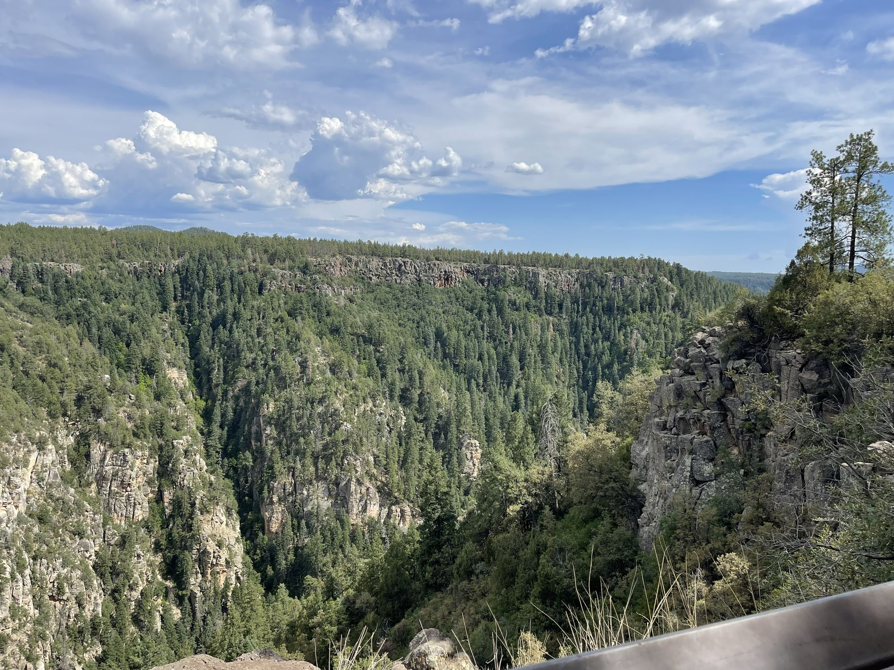
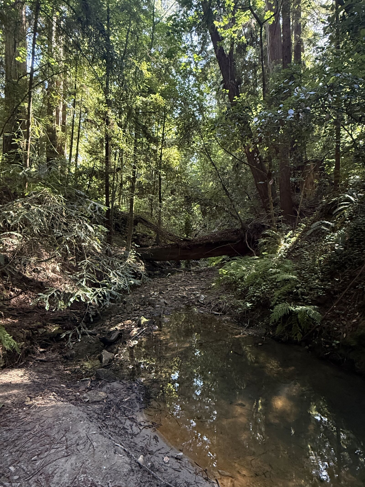
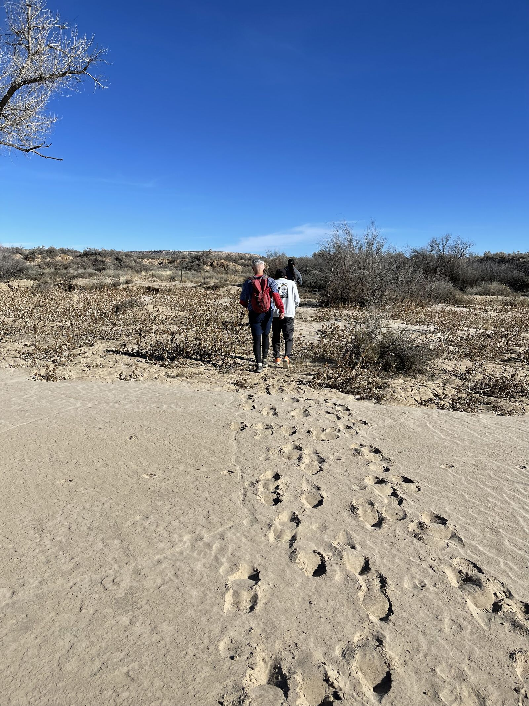
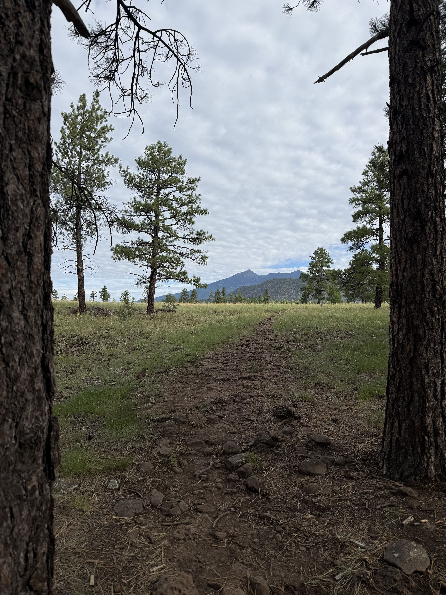
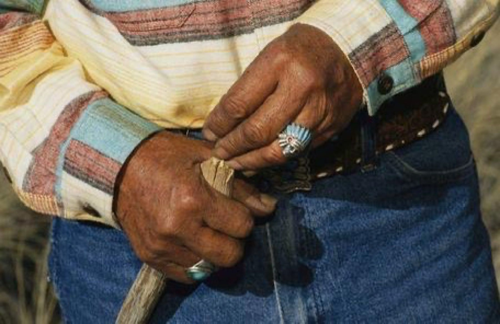
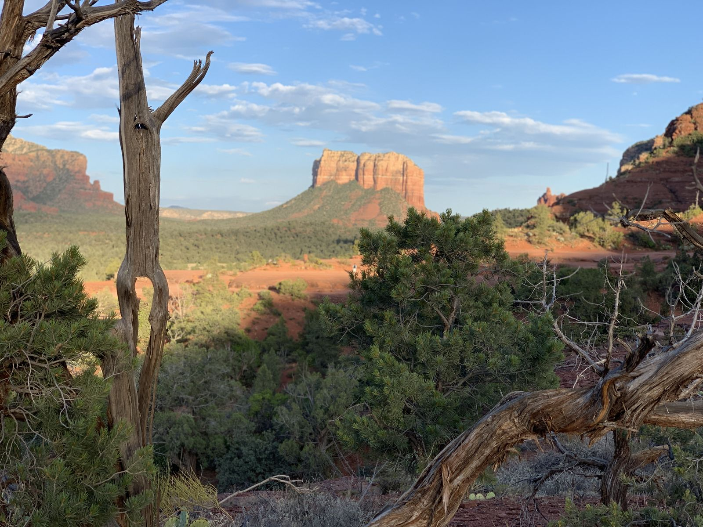

1
System oneThe long breath out.
Keeps the planning mind online under threat.
Week one, the runner's protocol"It keeps the breath even and slow, the heart rate low, the nervous system settle." Week one, spoken.

The practice rests on one claim, stated so it can be tested.
Under stress and panic we fall into tunnel vision. Our eyes narrow onto the problem. We hunch over, we stop breathing well, and we stop noticing what is around us. Each one makes the others worse.
Standing tall, widening your view, and softening your jaw tells your body it is safe to think again.
Week one, spoken.
Everyone else sells them separately: apps sell the body, self-help sells the mindset, coaching sells purpose. Each one fails alone. The far messengers held all three in one person.
A body in alarm narrows what it can see: you perceive less while wanting more. Calm widens the view.
"The frame is not decoration on the experience. The frame reaches the bloodstream."
A practice kept only for yourself fades on the days it feels pointless. A practice kept because people depend on you lasts.
The carriers trained the body every day because of what they carried.
What each one does, drawn, and where in the eight weeks you train it.
Keeps the planning mind online under threat.
Week one, the runner's protocol"It keeps the breath even and slow, the heart rate low, the nervous system settle." Week one, spoken.
The breath above, the heart below. The beats space out on the long breath out, and the rounds go on.
Lowers the internal noise so faint signals come through.
Week five, the acoustic horizon, and week three, the ridges"He softened his eyes and took in the whole horizon, instead of staring at just one spot." Week one, spoken.

The noise settles; the signal was there the whole time.
Stores what matters in places, not files.
Week two, the star houses, and week four, the songline"More than a hundred and fifty stars, each one known by the exact point on the horizon where it rises and the exact point where it sets, one star handing the steersman to the next as it climbed too high to use." The Far Messengers.

The houses on the horizon. Then the song: this rock, the water hole, where the ridge turns.

We cannot know which facts people will need two hundred years from now. We can hand down a mind steady enough to read the new country when it arrives. Survival of what we know is "an engineering problem of the organism, not the server." The aim is "preserving the capacity to know."
The ultimate frontier of climate adaptation is engineered within the human nervous system.
Two out of five people on this earth report worrying every single day, and that number has not gone down in twenty years.The Far Messengers, A Final Word


A body in alarm narrows what it can see. One breath round, by the water, and the whole horizon comes back.